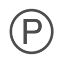

GUARANTEE
GUARANTEE AND SERVICE
To buy a fur coat as a reliable manufacturer means to provide for themselves all necessary follow-up service and guarantees. A fur salon does not assume such obligations and does not provide the many services that are offered by the manufacturer.
The warranty period starts from November 1 to March 1, regardless of the date of purchase, subject to the conditions and recommendations listed on sewn in labels and a memo to the product.
Fur belong to the seasonal goods.
We monitor the quality of our product from the moment of manufacture until the time of sale. We provide certificates of compliance, confirming that our product meets the requirements of normative documents. We work in accordance with the Law on consumer rights. The goods of good quality, but do not meet your requirements, you can return or exchange within 14 days from the date of purchase, in the presence of intact labels, labels and labels. During the warranty period, free of charge, resolves the following bugs: the joints at the joints of the skins, replacement hooks.
Product guarantee brand UUSI TIME is 1 year
We assume no obligation to remedy defects that were the result of sloppy socks products, normal wear and tear and failure to follow the rules of care of fur products.
IMPORTANT- the gap, the deformation of the leather due to excessive dynamic load, in particular due to the inconsistency of the size of the product body specifications of the consumer;
- abrasion pile of fur in those areas that are exposed to active influence;
- the differences in height, density, colour of the pile, the type of curls due to the topographical features of the habitat of the animals whose skins were used while sewing; yellow blue and white fur due to the oxidation of fatty substances;
- the formation of pellets, puffs on lining products in areas of intense friction on different material;
- the products smell remaining in the result of the use of fragrance ingredients for the dressing of fur skins.
Possible defects for which the manufacturer (seller) is not responsible for:
Follow the rules of operation of products that will extend life and save trademark owned fur clothing.
CARE RECOMMENDATIONS
- * Store fur products on a hanger with wide fields
- * Do not wear fur products with a relative humidity of over 65% (with wet snow, rain)
- * Dry fur products at room temperature, do not dry or store fur near heating appliances, in the open sun or a hairdryer
- * Do not look fur and lining with iron
- * Do not wash or wet the fur
- * Do not apply perfume or toilet water on the fur
- * Storage temperature of fur products from 0 to +8 °C with a relative humidity of 40-65%
- * It is allowed to store fur products at temperatures from -20 to +30 °C and relative humidity of 40-70%
- * Storage of fur products at temperatures above + 23 °C or relative humidity above 65% should be no more than 6 months

- 